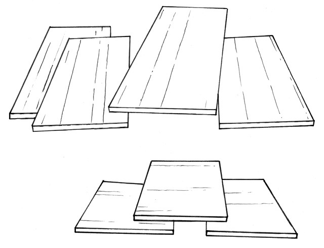
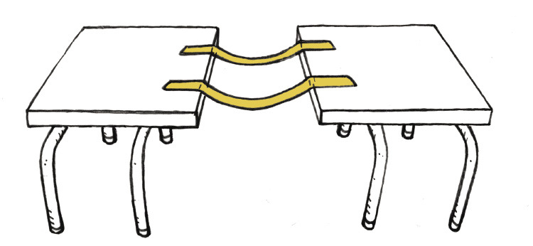

Figure 1: How can
the builders lay bricks over the window?Figure 2:
Different ways of supporting the wall above a window or a
door.Figure 3: What is this structure for? How
is it supported?Figure 4lintel across the
window opening. A lintel is a piece of wood, steel or concrete
that can support the wall above a window.
Lintels and
objects like thosein Figure
5 are called beams.
Figure 5Valencia is in a hurry and needs a few
extra tables for a wedding function at her house. She cannot
afford to buy real tables, but she has many wide sheets of wood
that can be used for tabletops.

Figure 6
How
can you use the sheet of wood to make tables, without having to
cut the wood? Make a rough sketch of your plan below.
Jaamiah has a
plan. She cannot describe the plan in detail, but she made this
drawing to show how her plan will work.
Figure 7
Valencia does not really understand Jaamiah's drawing. Make a
better drawing that will show more clearly what Jaamiah's
tables will look like. You only need to make a quick freehand
sketch to show what the table will look like.
To understand how Jaamiah's table will
work and to test if it will work well, you can build a small
model of the table. Use corrugated cardboard to do this.
You will need three pieces of
corrugated cardboard, each about 20 cm long and 10 cm wide.
Decide how you will cut the pieces for the tabletop and the two
supports. You can cut them with the corrugations along the
width, as shown in Figure 8, or with the corrugations along the
length, as shown in Figure 9.
Figure 8: Corrugations along the
widthFigure 9: Corrugations along the
length
Build your
model table and test it to see if it will work well.
How should the
corrugated cardboard be cut tomake the strongest top for your
table: with thecorrugations along the width or along the
length?
Figure
10
Show on the
drawing in Figure 11 in which direction the corrugations should
go to makethe strongest supports for your table.
Figure 11
Now think of
ways to make the table stronger so that it can support bigger
loads. The table in Figure 12 is not strong enough to support
its load without bending.
Figure 12
Suppose you
have another sheet of corrugated cardboard with which you can
make the table stronger. You can add the sheet as a second
table top, as shown in Figure 13. Or you can cut the extra
sheet in two pieces and make another A-frame support for the
middle of the table, as shown in Figure 14.
Which way of using the extra sheet will help the most to make
the table stronger: the way shown in Figure 13, or the way
shown in Figure 14?
Figure 13Figure 14Figure 15
Make a drawing on
Figure 15 to show what the bridge could look like.
Look at your
drawing. In what way will the bridge be supported so that it
will not bend when a heavy truck passes over it?
What materials do
you think should be used to make the bridge?
How wide should the
bridge be?
How many cars can
be on the bridge at the same time?
A beam-and-column bridgeAn arch bridgeA truss bridgeA suspension bridgeA cantilever bridgeA cable-stay bridge of the fan
typeA cable-stay bridge of the harp typesuspension bridge between two
desks with sticky tape. When you do this, you use the tapes as
cables.
Figure 17deck for the
bridge.Figure 18
Do you think this suspension bridge in Figure 17 will be strong enough to support a small bird walking on it?
cantilever bridge
between two desks. Put two pieces of corrugated cardboard on
the desks, like the blue objects on the drawing below. Put an
object like a book on one end of each cardboard sheet, so that
they will not fall down.Figure 19
How can you
complete the cantilever bridge without moving the cardboard
sheets or the desks closer together?
anchored on the two
sides, the same way you pasted your sticky tape strips on two
desktops. In most suspension bridges, the deck hangs from the
cables. We can also say the deck is suspended from the cables.Figure 20cable-stayed bridge
the deck is also suspended from the cables, but the cables are
anchored on support columns, not on the two sides of the
bridge. To make a simple model of a cable-stay bridge, you can
paste some pieces of string to a sheet of corrugated
cardboard.Step AStep BStep C
Do you think
it will work well to use a sheet of window glass for a
tabletop?
Figure 22: A table with a glass
top
A glass top can easily crack or break,
or fracture, when heavy objects are placed on it. There are
also other things that could go wrong with structures.
What material was
used to make the legs of the chair you are sitting on?
Why will it not
work to use rubber pipes to make the legs of a chair?
Tom made this plan for a model
table with a round top.
His plan is to make three bottles
stand on their small ends, with a round disk of cardboard on
top of them.
Figure 23: A table with a round top
Explain why this
will not work well.
Some parts, or members, of the structure can fracture, or break apart.
Some parts, or members, of the structure can bend.
Structures or parts of structures can topple over.
The pictures below show different ways that
bridges can fail. Describe what went wrong in each of the three cases, and how it could be prevented from happening again.Figure 24Figure 25Figure 26
A design for a
small table is shown here.
In what ways could
this table fail to work?
Figure 27
The pictures on the
opposite page show a suspension bridge and an arch bridge.
Figure 28Figure 29
Where are lintels
used in houses, and what are their purposes?
Can arches be used
instead of lintels when houses are designed and built? Make a
freehand sketch to illustrate your answer.
What is the
difference between a beam-and-column bridge and an arch
bridge?
When will you use
an arch bridge instead of a beam-and-column bridge.